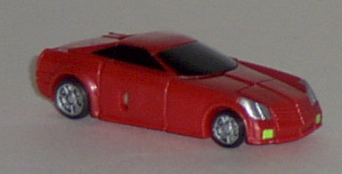
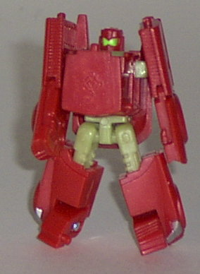
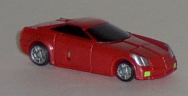
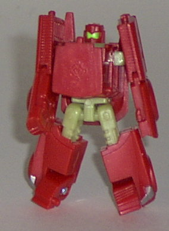
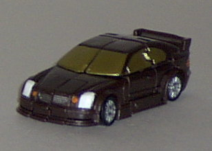
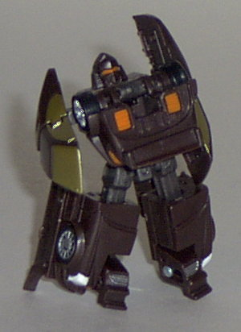
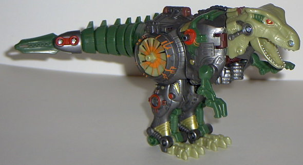
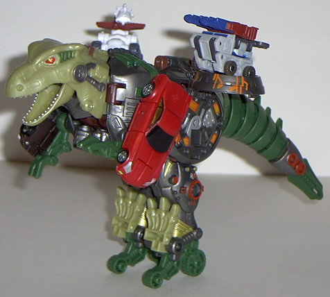
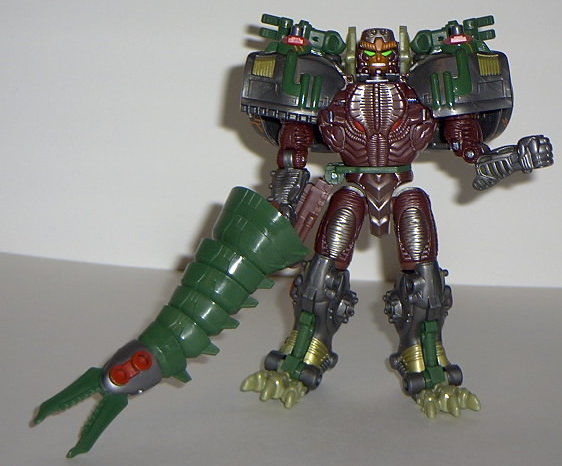

Sideburn
Sideburn
 
Allegiance : Minicon
Size : Mini-Con
Difficulty of Transformation : Medium
Color Scheme : Metallic red, tannish pale pea green, black, and some silver and lime green
Rating : 7.2
Sideburn


Allegiance
: Minicon
Size
: Mini-Con
Difficulty of Transformation
: Medium
Color Scheme
: Metallic red, tannish
pale pea green, black, and some silver and lime green
Rating
: 7.2
(NOTE: Because this is a repaint, this is not a full-blown review. This mainly covers any changes made to the mold and the color scheme, and merely compares it to Backtrack. For a review on the mold itself, read the review of Backtrack here .)
Armada Sideburn, even
though he's a repaint, is a bit of a throwback to
RiD
Sideburn
. For one thing, his vehicle mode is somewhat similar in design,
but he also has almost the same color scheme in that mode that RiD Sideburn's
"Super Mode" had. It's certainly a good color choice for a sportscar Transformer,
although he still needs a bit more paint detailing, just like his predecessor
Backtrack. In robot mode, I'm also not too fond of the color choice used
for his upper legs, arm connectors, and waist- it's almost the color of
puke, and it looks just plain ugly. On the other hand, the lime green headlights
and head visor, while at first a bit funky, actually blend rather well
with the red.
No mold changes have
been made to Sideburn, although this version doesn't seem to be quite as
fragile as Backtrack.
Sideburn is a pretty
good repaint, but that odd puke green color that you can see a bit of in
his robot mode puts him slightly below his predecessor Backtrack. A nice
nod to the RiD version, though.
Skid-Z


Allegiance
: Minicon
Size
: Mini-Con
Difficulty of Transformation
: Easy
Color Scheme
: Dark brown, dull gold,
and some bright orange, charcoal black, silver, and white
Rating
: 6.5
(NOTE: Because this is a repaint, this is not a full-blown review. This mainly covers any changes made to the mold and the color scheme, and merely compares it to Spiral. For a review on the mold itself, read the review of Spiral here .)
Although not a throwback
to his RiD version, Armada Skid-Z is still a pretty decent repaint. The
brown and gold go together great, especially in the vehicle mode, and the
white headlights and silver tires and bumper are also really nice touches.
The main thing I'm not quite fond of is the bright orange highlights, but
luckily, they're used sparingly. The charcoal black used for his upper
legs and waist I'm only lukewarm on as well- more of a pure black would
have been better.
No mold changes have
been made to Skid-Z.
Like his Mini-Con partner,
Skid-Z is a nice repaint, but his predecessor still upstages him slightly.
Namely because blue is a bit more of an eye-catching color than brown,
and the neon orange highlights on Skid-Z are a bit ugly.
 Predacon
Predacon



Allegiance
: Decepticon
Size
: Max-Con
Difficulty of Transformation
: Medium
Color Scheme
: Metallic gunmetal
gray, reddish brown, dark jungle green, and some silver, dull gold, lime
green, bright orange, white, red, and tannish pale pea green
Powerlinx ports
: 4 (0 gimmicked)
Rating
: 8.3
(NOTE: Because this is a repaint, this is not a full-blown review. This mainly covers any changes made to the mold and the color scheme, and merely compares it to Megatron Transmetal. For a review on the mold itself, read the review of Megatron Transmetal here .)
Predacon (yes, that's
his name... stupid lazy Hasbro trademarkers) certainly has an original
color scheme. In my opinion, though, it works, for the most part. The different
shades of green and brown certainly make him look more reptilian, while
the excellent metallic silver and gray make him look very mecahnical around
the midsection (or shoulders and legs, depending on which mode you have
him in). The orange detailing here and there works, since it signifies
energy patterns (unlike on Skid-Z), and the red also works as a nice highlight
color. The color I don't like, though, is that awful tannish pea green,
which, as noted earlier, is the color of puke. More of a traditional green
would have worked in its place, methinks. Although I think that, overall,
Predacon's color scheme doesn't quite have the visual appeal that Megatron
Transmetal's had, he defintiely has loads more paint apps. I mean, if there
were any more, I'd consider him downright crowded. And, on top of that,
you don't have to worry about any chrome plastic flaking, so that's certainly
a big plus.
Just like the other
Armada beasts, Predacon has been remolded with Minicon ports to help him
fit in with the line's gimmick. He has two on his shoulders- which are
fairly good places to put them- as well as two in the middle of his rotating
engines. On one hand, it's a pretty creative place to put them, since the
parts they're on spin, so you can spin Minicons on 'em. On the other hand,
the ports don't seem to hold Minicons very snugly in place. Hrrrm.
Predacon is a pretty
creative remold, and the Minicon port are placed well. If it wasn't for
that darned yucky puke green, he might have made it up to Megatron Transmetal's
level, but as such, he sits slightly below that point.
No Stats
Review by Beastbot